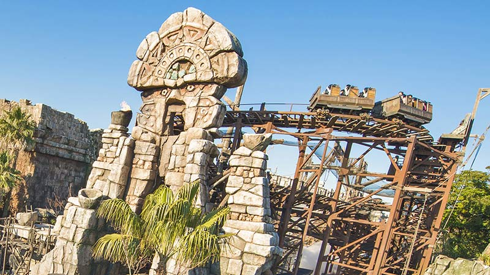

０．始めに
この期末プロジェクトでは６月１４日（金）に僕が母と姉と東京ディズニーシーに行って参りましたので
その日の様子と体験したアトラクションや食べたグルメについて紹介・レビューしたいと思います。
１．出発～入園まで
今僕は群馬県藤岡市に住んでおり、ここから母が運転する車で高速道路に乗ってパークに向かいました。
出発した時間は前日６月１３日（木）の２２時前くらいで、セブンイレブン浦安舞浜店に着いたのが２４時前くらいと移動に２時間くらいかかりました。
ここで入園前に食べる朝食と飲み物を購入して、成田に住んでいる姉と合流して、
２４時１０分くらいにこの日のキャストによる案内までの待機場所であるSSコロンビア号という蒸気船の裏側にあたる道路で待ちました。
来た時には既に前に１３台くらい車が来ていました。
案内されたのは１時３０くらいでパークから一番遠い第７駐車場に案内されました。
第７駐車場に向かう途中前にいた他のゲストの車がUターンし、第７駐車場へのルートが分からなくなってしまうというトラブルが起きたものの、なんとか第７駐車場に到着しました。
その後車を駐車した後は、第７駐車場からパークへ続く歩行者専用通路にて待ちました。
３時１０分くらいにキャストから案内があり、歩行者専用道路の下あたりで一旦20分くらい待機したあと、サウス側のパークエントランス前にてオープンまで待ちました。
この時、僕一人でパークエントランス前にて待ち、母と姉は一旦車に戻って7時前くらいに合流しました。
２．食べたグルメについて
まずはお昼にアラビアンコーストにあるカスバ・フードコートのチキンカリー（甘口）¥９００を食べました。
カレーといえばライスかナンどちらか片方と一緒に食べることが殆どだと思いますが、下の写真のようにこのチキンカリーはライスとナン両方あります。
具は鶏肉のみのシンプルなもので、味はCoCo壱などのカレー専門店に負けない味で何杯でも食べれちゃいます。
次にパーク内３か所で販売されているティラミス・クッキーサンドアイスを食べました。
普段僕はアイスクリームは食べないのですが、母から食べてみないかと言われ食べたところ、美味しかったです。
ティラミスとアイスクリームの組み合わせは相性抜群暑い夏に食べるのには持って来いのものでした。
その次に食べたのがパーク内２か所で販売されているクリームブリュレ風チュロスです。
このチュロスは中にカスタードが入っていて、皮は砂糖でコーティングされていて甘いもの好きに刺さりまくる組み合わせで、何本でも食べれちゃう美味しさです。
一度食べだしたら手が止まらなくなるほどのものなので、食べるときはご注文を！
最後に食べたのがパーク内１か所で販売されているデミグラス・チュロス（ポテト）です。
このチュロスは中にデミグラス感控えめのデミグラスソースが入っていて、皮はもちもちふわふわのポテトになっていて、全体的に塩味のきいた味となっています。
クリームブリュレ風チュロスのような一度食べだしたら手が止まらなくなるような罪悪感はありませんので気軽に食べられます。
３．体験したアトラクション
まずは入園してすぐメディテレーニアンハーバーにあるソアリン：ファンタスティックフライトに乗りました。
東京ディズニーシーと東京ディズニーランドのエリアやアトラクションにはバックグラウンドストーリーがあり、公式が解説しているので、
下の画像をクリックしたら公式のバックグラウンドストーリーを解説しているサイトに飛べるようにしてあります。
詳しいバックグラウンドストーリーはそちらをご覧ください。
このアトラクションではこのドリームフライヤーに乗り込んで世界中を旅するというアトラクションです。
ただ世界中の景色が見えるだけでなく匂いもします。視覚だけでなく嗅覚でも楽しめるアトラクションとなっております。
僕が初めて乗った時はオープン間もない頃で、景色や匂いに心を動かされドリームフライヤーの飛行が終わるや否やゲストから大拍手が起こりました。
それほどゲストが感動したということが分かりますね。
ただ2回目以降に乗ると既に見ているのでそれほど感動はせず６月１４日（金）に乗った時も例外ではなく僕の心が動かされることもなく、ゲストから大拍手が起こることもありませんでした。
ただ初めて乗れば感動することは間違いありません。
そしてこのソアリン:ファンタスティックフライトは東京ディズニーシーの中でも随一の人気を誇るアトラクションですので
ディズニープレミアアクセスやプライオリティパスの取得をおすすめします。
２番目に乗ったのはレイジングスピリッツです。
こちらも下の画像をクリックすると公式のバックグラウンドストーリーを解説しているサイトに飛ぶようにしてあります。
詳しいバックグラウンドストーリーはそちらをご覧ください。
このアトラクションの最大の特徴は３６０度回転するジェットコースターで、他にも急カーブや急停止があり旅客機や戦闘機みたいにGが少しかかります。
時間は他のアトラクションと比べたら短めで、ジェットコースターにめっぽう弱い人はレイジングスピリッツで練習してみてはいかがでしょうか。

３番目に乗ったのはアナとエルサのフローズンジャーニーです。これは新アトラクションでネタバレ注意なので下の画像をクリックして飛んだ先にある別のHTMLファイルに続きを載せます。
4番目に乗ったのはラプンツェルのランタンフェスティバルです。こちらも新アトラクションでネタバレ注意なので下の画像をクリックして飛んだ先にある別のHTMLファイルに続きを載せます。
５番目に乗ったのはディズニーシー・エレクトリックレールウェイです。
こちらも下の画像をクリックすると公式のバックグラウンドストーリーを解説しているサイトに飛ぶようにしてあります。
詳しいバックグラウンドストーリーはそちらをご覧ください。
この日はポートディスカバリーからアメリカンウォーターフロントのルートに乗りました。
この時足が疲れてきたということでこの後乗るトイ・ストーリー・マニア！とタワー・オブ・テラーに乗るためアメリカンウォーターフロントに向かうことになり、
ディズニーシー・エレクトリックレールウェイに乗ることになりました。
車内からは車内からしか見えない景色が見えたり、他のゲストが手を振ってくれたりとディズニーシー・エレクトリックレールウェイにしかできない体験ができます。
ぜひ乗ってみてはいかがでしょうか。
６番目に乗ったのはトイ・ストーリー・マニア！です。
こちらも下の画像をクリックすると公式のバックグラウンドストーリーを解説しているサイトに飛ぶようにしてあります。
詳しいバックグラウンドストーリーはそちらをご覧ください。
このアトラクションはシューティングタイプのアトラクションですが、的に当てるだけなら簡単なのですが、
２０万点や３０万点といった高得点を出すとなると隠されたギミックを知らないと出すのはとても厳しいものになっています。
高得点を狙えるギミックはYouTubeに動画が幾つかあるので検索してぜひ高得点を狙ってみてください。
ちなみにこの日僕は高得点を狙えるギミックを幾つか発動させて１０万点くらいでした。
ギミックを知ってるだけでは高得点は狙えないので、何回か乗って練習するのは必須です。
こちらもソアリン：ファンタスティックフライトと同様人気アトラクションなのでディズニープレミアアクセスやプライオリティパスの取得をおすすめします。
７番目に乗ったのはタワー・オブ・テラーです。
こちらの下の画像はタワー・オブ・テラーがあるアメリカンウォーターフロントに関するバックグラウンドストーリーを解説している公式のサイトに飛ぶようにしてあります。
詳しいバックグラウンドストーリーはそちらをご覧ください。
このタワー・オブ・テラーのバックグラウンドストーリについて簡単に解説すると、
大富豪で探検家のハイタワー３世がいてアフリカの秘境で手に入れた謎の偶像シリキ・ウトゥンドゥというものを持ち帰り、記者会見でこのことを発表します。
その後ハイタワー３世は謎の失踪を遂げます。
アトラクションでは業務用エレベーターに乗り彼の失踪の鍵を握るホテルの最上階へ行くというものです。
ちなみにアトラクションの最初にキャストより先程述べたバックグラウンドストーリーについて話がありますのでそちらでも聞けます。
このタワー・オブ。テラーでは過去に何度か期間限定でレベル１３シャドウ・オブ・シリキやアン・リミテッドといったスペシャルバージョンが開催されていました。
最上階に行くとそこで写真撮影があるので予めどういうポーズをとるか決めておくことをおすすめします。
撮った写真はアトラクション後にショップで複数のモニターがあり、どれか一つに自分の写っている写真が映し出されるので確認しましょう。
最後に乗ったのはインディジョーズ・アドベンチャー：クリスタルスカルの魔宮です。
こちらの下の画像は公式の解説しているサイトが見つからなかったので一般の方のブログに飛ぶようにしてあります。
詳しいバックグラウンドストーリーはそちらをご覧ください。
このアトラクションは他のアトラクション以上に左右の揺れが激しいので、乗り物酔いしやすい人は注意が必要です。
ちなみに乗っている最中本当にどこかに若さの泉があるとかないとか…この真相はぜひアトラクションに乗ってご自分の目で確かめてみてください。